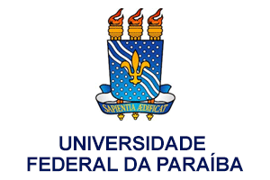
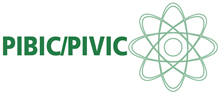

Sisalfa é um Projeto e Desenvolvimento de um Sistema Colaborativo para apoiar o Processo de Alfabetização de Jovens e Adultos, o principal problema a ser abordado por este projeto de pesquisa é a investigação a respeito do projeto, desenvolvimento e aplicação de um serviço que seja colaborativo e apoie o processo de alfabetização inspirado nas ideias de Paulo Freire. Segundo dados divulgados pela Unesco (Organização das Nações Unidas para a Educação, a Ciência e a Cultura) e levantados entre 2005 e 2011, dos 36 milhões de adultos analfabetos na América Latina, 38,5% são brasileiros, ou seja, são cerca de 14 milhões de pessoas.
Segundo a Pesquisa Nacional por Amostra de Domicílios (Pnad), a taxa de analfabetismo entre brasileiros com 15 anos ou mais em 2014 foi estimada em 8,3% (13,2 milhões de pessoas). Ou seja, tem-se um grande problema em mãos e, ao mesmo tempo, observa-se nas mãos de algumas dessas pessoas dispositivos que podem lhes auxiliar a sair dessa condição, desde que aplicativos e sistemas apropriados possam ser criados e utilizados com a mediação de educadores.
 